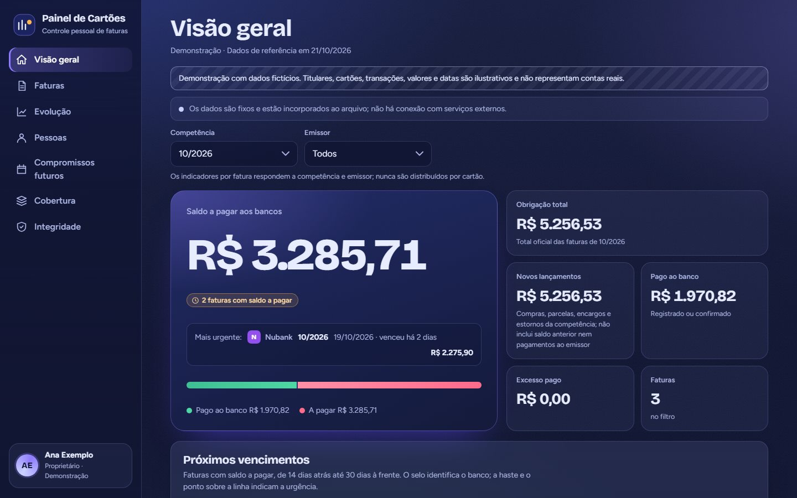
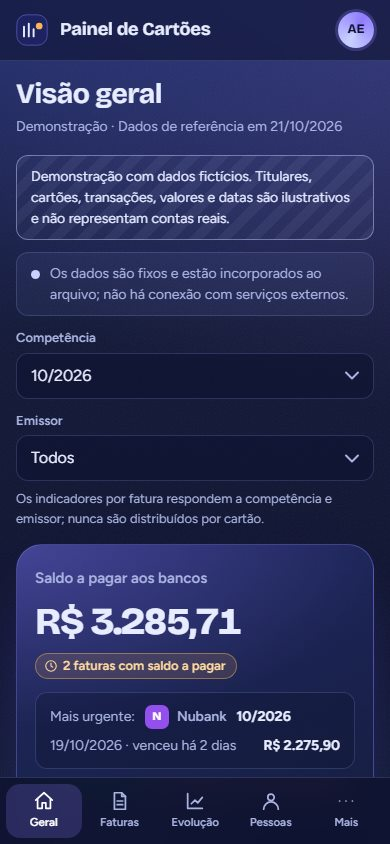

Projeto em destaqueDados fictícios para preservar a privacidade financeira
Uma necessidade pessoal. Uma solução que foi além da planilha.


O que começou como uma necessidade de organizar as faturas dos meus cartões de crédito evoluiu de uma planilha para um sistema de controle de cartões e faturas, com validações, acompanhamento de compromissos futuros e um dashboard interativo.
O resultado? Diferentes cartões e suas faturas reunidos em um só lugar, acessíveis tanto pelo computador quanto na palma da mão, pelo smartphone, de onde eu estiver.
Desenvolvido com apoio do Claude Code: as regras financeiras, os controles e a validação foram definidos por mim; a IA acelerou a construção.
O que o sistema faz
- Consolidação de cartões de diferentes emissores
- Faturas, lançamentos, pagamentos e saldos a pagar
- Despesas próprias e de terceiros, rateios e parcelamentos
- Compromissos futuros por competência
- Indicadores consolidados e detalhados
- Regras de integridade e conferência matemática
- Interface responsiva, com uso no celular
- Visualização gráfica da situação financeira
O sistema pessoal está em uso com meus próprios dados, que não são publicados. A demonstração é uma versão à parte, com dados fictícios e sem login.
Claude Code / HTML / CSS / JavaScript
Abrir demonstração